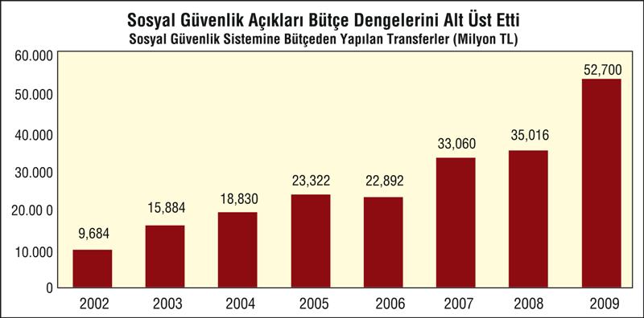
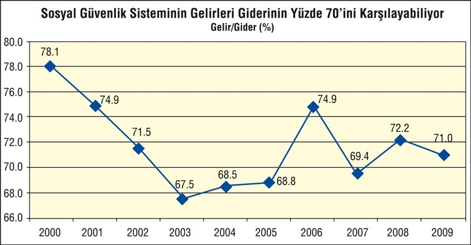

1980 sonrasının neoliberal politikaları adım adım sosyal devleti yok etti. 12 Eylül mamulü 1982 Anayasası'na konulan emek örgütlenmelerine getirilen kısıtlamalar, grev, toplusözleşme haklarını görünürde var gösterip fiiliyatta yok eden yaklaşımlar, emeğin enformalleşmesine imkân sağlayan her tür düzenleme, devletin istihdam sağlayıcı yatırımcı özelliğini budama... Bunların yanı sıra, vergi-harcama politikalarında, emeğin aleyhine sermayenin lehine düzenleme de sosyal devleti berhava etti. Malum; dışa açılmak için, rekabet gücü edinmek, onun için de emek maliyetini düşürmek, devletin bütçe üstünden emeğe aktardıklarını kesip sermayeye aktarmak, onu güçlendirmek gerekiyordu.
Emeklilere sağlanan maaş ve sağlık harcamalarında eli sıkı davranmak da bu neoliberal anti-sosyal yaklaşımın ürünüydü. Çoğu, IMF diktesiyle, istisnasız 1980 sonrası tüm hükümetlerin icraatlarına yansıyan bu anti-sosyal devlet yaklaşımı, son 7 yıllık AKP iktidarına da damgasını vurdu. Dahası, "Sağlıkta Dönüşüm" adı altında AKP iktidarınca girişilen "reform" adı altındaki icraat da tam bir fiyaskoyla sonuçlandı. Bugün, SGK, yani Sosyal Güvenlik Kurumu hızla iflasa gidiyor ve kurumu ayakta tutmak için bütçe kaynaklarını artan oranlarda aktarmak gerekiyor. Öyle ki, bütçede en önemli kalemin biri faiz ödemeleriyse, diğeri SGK'ye, batmaması için yapılan, bütçe transferleridir.
AKP iktidarının ilk icraat yılı olan 2003'ün sonunda 16 milyar TL'yi bulan ve o yılın milli gelirinin yüzde 3.5'u tutarındaki bütçeye aktarımlar, 2007'de 33 milyar TL'yi buldu ve milli gelire oranı da yüzde 4'e yaklaştı. 2008'de ise bütçe transferleri 35 milyar TL'ye çıktı. Krizin de etkisiyle SGK 2009'da iyice batmaya başladı. Krizde çok sayıda işçi işten çıkartıldı, dolayısıyla prim gelirleri 1 yılda 2 milyar TL azaldı. Yanı sıra, hem özel sektör, hem Bağ-Kurlu esnaf, hem de çoğu AKP'li belediyeler prim borçlarını ödememeye başladılar. 2009'da tahsili gecikmiş prim alacağı tutarı 50 milyar TL'ye yaklaştı. Prim gelirleri azalırken ilaç firmalarına, özel hastane ve kliniklere bol keseden aktarılan kaynaklar, SGK'yi iyice dibe itti ve Hazine'den aktarılan kaynaklar 53 milyar TL'ye yaklaştı.

Sosyal Güvenlik Kurumu (SGK), kendi prim gelirleriyle sistemin toplam giderlerinin en fazla yüzde 70'ini karşılayabiliyor. Geri kalan yaklaşık yüzde 30'luk kısım ise bütçeden alınan transferlerle finanse edilebiliyor.

SGK çatısı altında toplanan SSK, Bağ-Kur ve Emekli Sandığı'nın 2000 yılında yüzde 78 olan gelirleriyle giderlerini karşılama oranı 2003 yılında yüzde 67,5'e kadar düşmüştü. İzleyen yıllarda yapılan prim aflarının yarattığı geçici gelir artışıyla birlikte yeniden yüzde 75'e kadar yükselen söz konusu oran 2009 yılında ise yüzde 71 olarak gerçekleşti.
Sosyal güvenlik sisteminin prim gelirleri yaptığı emekli aylığı ödemelerini bile karşılamaya yetmiyor. 2008 yılında 59,1 milyar lira emekli aylığı ödemesi yapan sosyal güvenlik sisteminin prim gelirleri ise 54,5 milyar TL düzeyinde kaldı.
Sosyal güvenlik sisteminin, emekli aylığı ödemelerinin kalan bölümü ve çok büyük miktarlara ulaşmaya başlayan sağlık harcamaları da bütçeden alınan kaynakla karşılandı
| SOSYAL GÜVENLİKTE PRİM GELİRLERİ VE EMEKLİ AYLIĞI ÖDEMELERİ (Milyon TL) |
|||
| Prim Geliri | Emekli Aylığı Ödemesi |
Prim geliri/emekli aylığı ödemeleri |
|
| 2002 | 14.822 | 16.687 | 88, 8 |
| 2003 | 21.178 | 25.174 | 84, 1 |
| 2004 | 27.424 | 30.661 | 89, 4 |
| 2005 | 30.882 | 38.537 | 80, 1 |
| 2006 | 41.620 | 45.076 | 92, 3 |
| 2007 | 44.052 | 52.312 | 84, 2 |
| 2008 | 54.546 | 59.137 | 92, 2 |
| 2009 | 48.138 | 61.761 | 77, 9 |